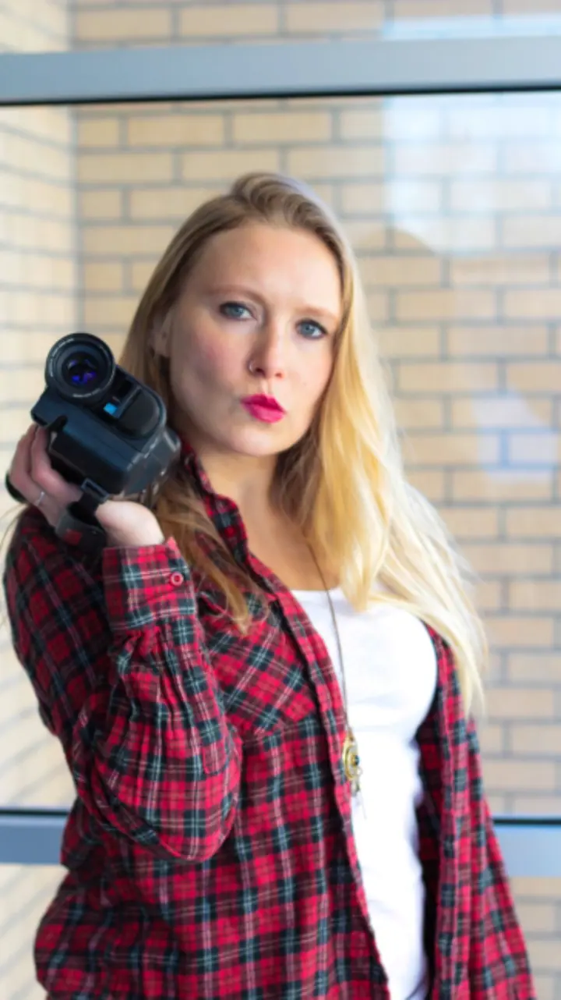
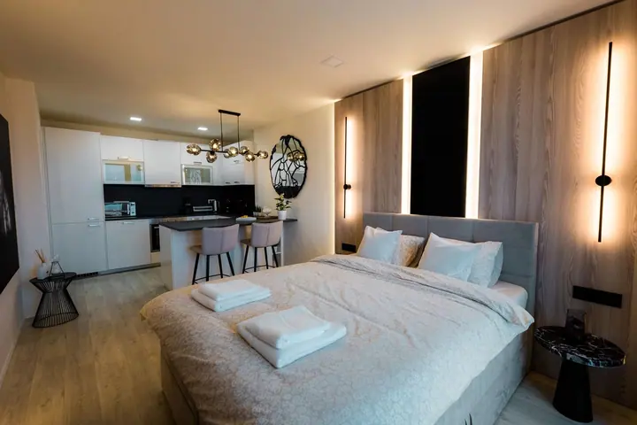

01 / 04
Fotografie nemovitostí
Fotím byty, apartmány i rodinné domy pro prodej a pronájem. Pracuji s čistým světlem, rovnými liniemi a celým prostorem.
Zeptat se na termín→


Video a fotografie, které vyprávějí
Zeptat se na termín →(01) Ahoj
Jmenuji se Tomáš Liszka, žiju v Brně a video produkci se věnuji už 7 let. Natáčím svatby , reklamní spoty a firemní videa a fotím také nemovitosti , aby z obrazu bylo poznat, jaké to místo opravdu je.
7let za objektivem
(02) Co dělám
01 / 04
Fotím byty, apartmány i rodinné domy pro prodej a pronájem. Pracuji s čistým světlem, rovnými liniemi a celým prostorem.
Zeptat se na termín→Dále nabízím
Od roku 2019 natáčím svatební videa, ve kterých zachycuji emoce, detaily a atmosféru vašeho velkého dne. Chci, aby vás video bavilo i po letech a upoutalo i diváka, který na svatbě nebyl.
↗Natáčím reklamní spoty, firemní a gastro videa i prezentace studijních oborů. Pracoval jsem třeba pro Armádu spásy, VUT nebo podniky v Dalešicích.
↗Natočím rozhovor nebo podcast a připravím i živý přenos vaší akce.
↗(04) Postup
Od první zprávy po hotovou galerii.
Krok 1 z 4
Napíšete mi nebo zavoláte a probereme, co potřebujete, ať jde o svatbu, firemní video nebo fotky nemovitosti.
Krok 2 z 4
Domluvíme termín, místo a průběh. U reklamy nebo firemního videa si společně ujasníme, co má video sdělit.
Krok 3 z 4
Na místě pracuji v klidu a nenápadně, soustředím se na atmosféru, detaily a světlo.
Krok 4 z 4
Materiál sestříhám a upravím a hotové video nebo fotky vám předám v domluveném termínu.

Každý den i každý prostor má svou atmosféru.
(05) Za objektivem
Jmenuji se Tomáš, žiju v Brně a video produkci se věnuji už 7 let. Natáčím reklamní spoty, firemní videa, rozhovory a podcasty, gastronomii i živé přenosy. Za sebou mám projekty pro Armádu spásy, gastro podniky v Dalešicích, studijní obor Mechatronika na VUT nebo německé dřevostavby ADMD.
Od roku 2019 tvořím i svatební videa. Natáčím je tak, abyste v nich našli svoje nejhezčí momenty a zároveň aby upoutala i diváka, který na svatbě nebyl. Zajímají mě emoce, detaily a atmosféra celého dne.
Kromě videa fotím nemovitosti. Byty, apartmány i rodinné domy fotím čistě a ve světle, aby fotky ukázaly prostor tak, jak ho pak uvidí zájemce na prohlídce.
Tomáš
Tomáš Liszka · Kameraman a fotograf nemovitostí
Žiju v Brně, ale za prací rád vyjedu i dál. Místo a případnou dopravu domluvíme individuálně.
Svatební balíček vám rád pošlu na vyžádání, cenu pak upravíme podle délky a průběhu vašeho dne.
Ano, fotím byty, apartmány i rodinné domy pro prodej a pronájem, uvnitř i zvenku.
Ano, natáčím rozhovory a podcasty a připravím i live stream vaší akce.
(07) Kontakt
Napište pár vět o tom, co si představujete, a termín, který se vám hodí.